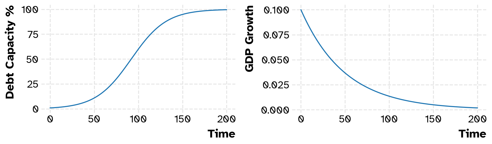

Show the code
difference_usd_mur = 0.32
excess = (314-258)/258
partial_cpi_mur = (excess + difference_usd_mur) * 100
print(partial_cpi_mur)53.70542635658915This paper derives basic micro and macroeconomic laws that will help anyone understand the causal relationships present in all economic systems, and their deterministic nature as well as the general difficulty in estimating them accurately, which makes economic statistics tampering easy, as well as how to get around that dilemma.
Yuuki
October 26, 2024
The situation of the Republic of Mauritius has been catastrophic for a lot of years now. I wish it was possible for me to explain all of this to you without mathematics. But it is not possible, because it would be my words against the current government’s lies. That is a bad standard to set. It would basically be me telling you to believe my propaganda, versus the government’s propaganda. Here is the thing, I should not have to convince you. There is no need for any propaganda of any kind. I should not have to convince you that gravity exists. If you drop something, you can observe that it will fall down according to the laws of classical mechanics. Just like physics, economics is a deterministic field of study. It has its laws too. It is just not explicitly taught that way because it is a social science. I am going to teach you a simple way to think about macroeconomics in this paper that will help you understand not only the economy of the Republic of Mauritius but any economy in the world. All you need to understand this paper is basic calculus one. This is the best 3 minutes explanation of calculus one that I know of, if you are not familiar with it.
If you understand this paper, you will finally understand that all the economic statistics of the Republic of Mauritius are wildly fake these days. We are on the brink of a catastrophe more than ever. All it takes, is capital flight from GBC deposits. Even something as small as, one billion dollars worth of deposits being claimed would force banks to buy a lot foreign currency breaking the exchange rate, to honor their liabilities. In some cases, some would be forced to sell assets by marking them to market, in the process hurting their books and in all likelihood breaking the banking system as a whole which is not solid at all because our central bank is weak. You see, these days, Mauritius is just bankrupt. It has been for a long time. But that is the problem with invented governments that has a monopoly over their own currency that they can create arbitrarily. They cannot go bankrupt or declare bankruptcy. Because government can always invent an excuse and print money via the central bank. We call that debasing your currency. Around 180 billion rupees (worth 3.75 billion dollars at 48 rupees/ USD) has been printed solely via bullshit excuses to make up for the fact that the country is broke. But they made the situation so much worse, by printing so much money, allowing so much inflation just to save their necks. You have to understand that. You had to pay a price. You had to starve, so they could live another day. By resorting to money printing our country has basically tied a noose around everybody’s neck. Every time they print money, they tighten that noose a little bit more. That is not a bad dream I am inventing. That is the reality of the situation. Those are facts. Without you toiling everday, this country would crumble in a week. You are the only reason, our country still stands after so much corruption and mismanagment of our resources. You the people of the Republic of Mauritius who go to work everyday, you are the true heroes of this story. Yet, you are all heavily discriminated these days. Foreign currency access is only allowed to those who are in the good favors of government today. It is the most discriminatory the country has ever been since its independence. There are two kinds of people today in the Republic of Mauritius. The kind who gets unlimited access to foreign currency and the kind that has to beg, to be able to send their children money. The worst of it is that faced with this a lot of conglomerates have simply, stopped selling their foreign currencies and resorted to using swaps. They stopped selling because they know how bad the situation is. I don’t blame them. Unlike Moody’s or the IMF, they know what the true economic position is, because they live here.
Now, this discrimination was always true of domestic currency and still is. There are people in the Republic of Mauritius that always had unlimited access to money and generally at a reduced cost. You can use any word you want to refer to them but crony is a good word. A crony can be anybody, so we should define the term. A crony is anybody who gets gets their cost of capital subsidised by the government, sometimes below the risk free rate. Now there is a peculiarity with crimes, in that most of them are not recognized as crimes and you cannot do anything about that. You and I cannot do anything about the free capital that government gave for 56 years. They are not crimes. They are policies, when well orchestrated. Policies that were designed to bleed you as much as possible, to please their cronies and fill their own pockets with any bribe they could get for this favor. Likewise, and it can be cruel to hear this, but politicians never explicitly steal public money. No good politician ever steals public money. Technically they spend public money which will cleverly find its way back to them. In the end, the law is what you make of it. Use it wrong, and the criminal goes free. We negligently and purposely in bad faith used it wrong or not at all for all these years. No country, that treats its citizens, with such discrimination and disdain for the law can be doing well. Let us understand all of this with some basic mathematics.
Consider real output in a closed economy.
\[\begin{equation}\tag{1}\label{eq-a} y(c,s) = c_{r} + s_{r} \quad \text{where} \quad s = i \end{equation}\]
In a closed economy there are only two things, consumption \(c\) and savings \(s\). Because of that fact, savings also equals investment when considering a closed economy. Now in macroeconomics, there are two type of statistics. One that is called a real statistic where inflation is stripped off and another one, called a nominal statistic where inflation is not stripped off. These two statistics are always related to each other, at all times. The challenge is to understand how they are related objectively, so that even if the Republic of Mauritius was faking all of its statistics (which it is doing, these days), it would ultimately not matter, because you would not need to rely on any statistic anymore. You would rather have an understanding of how an economy works. You would never need to read an opinion about the economy every again in this life. You would always know everything about any economy. Now, the first step in doing that is to understand how nominal output and real output are related. Consider writing \((1)\) in different real terms.
\[\begin{equation}\tag{2}\label{eq-b} y(c,s) = c_{r} + s_{r} \Longleftrightarrow y(p(c,s)) = \frac{c_{n}+s_{n}}{p_{\text{deflator}}} \Longleftrightarrow y(k(c,s)) = \frac{c_{n}+s_{n}}{k} \end{equation}\]
As you can see these equations are related by the fact that, they all represent real output, but we do not work with real output in the real world, because governments need a get out of jail free card through money printing. We work with nominal output, because economics is ultimately a ponzi scheme based on population growth, where you pay back debt with a little growth and with money being less valuable over time, which is a process that is called inflation. Do not panic, this is true, well known and easy to derive. We will much further down. You see, the belief that government exists to protect your interests is a naive and dumb interpretation of human nature. It is very hard to believe with all the fluff, that government throws at you, of course. But you have to remember, governments only exist, because it remains the most elegant and non controversial way to hold power over the resources of an entire country without protest and competence. All you need is a bad constitution and bad laws for the nightmare to begin. These are both things, the Republic of Mauritius has had for 56 years. We are getting played buddy, there is no democracy, no fairness. There never was, the democracy our parents believed in was communalism. That is not and will never be democracy. Today, there is just you, and me who is too afraid to stand up to the bullies of this country. Back to business, why is it important to understand how real and nominal output works ?
It is important, because one affects the other. There are causal relationships here. Cause and effect relationships, which means that, \(p_{\text{deflator}}\) which here represents the GDP deflator and \(k\) which here represents the exchange rate, can give you useful information about any economy at any time. You do not need to know real output exactly, you can infer everything from a robust understanding of how the exchange rates, price indexes and output are objectively related. Economics is not magic. There are simple rules every economy out there will always respect. Learn the rules and no one will be able to fool you again. Meaning these are three ways to be looking at the same thing objectively, because all these three equations represent the same thing \(y\) which is real output. So this logically means that \((2)\) is equivalent to (3).
\[\begin{equation}\tag{3}\label{eq-c} \text{Real Output} \Longleftrightarrow \text{Real Output} \Longleftrightarrow \text{Real Output} \end{equation}\]
So even if, any government like the current republic of mauritius fakes all its statistics, it cannot fake how economics works deterministically. If you can understand that, then you are good to go. The biggest barrier to understanding this is going to be reading basic calculus notation. So the first thing we have to do is understand the causal relationships between
\[\begin{equation} \dfrac{dy}{ds}= \dfrac{dy}{dp} \dfrac{\partial p}{\partial s} = \dfrac{dy}{dk} \dfrac{\partial k}{\partial s} = Productivity \end{equation}\]
\[\begin{equation} \dfrac{dy}{dc}= \dfrac{dy}{dp} \dfrac{\partial p}{\partial c} = \dfrac{dy}{dk} \dfrac{\partial k}{\partial c} = Inflation \end{equation}\]
So from these two equations, the first causal relationship that we find is that between productivity and inflation. Productivity is the absence of inflation. An increase in inflation will always be met by decreases in productivity. Now why is that true? To understand that we need to understand the causal relation between exchange rates, prices and real output. We do that by defining the total differential of both price \(p(c(t),s(t))\) and the exchange rate \(k(c(t),s(t))\) over time to be.
\[\begin{equation}\tag{4}\label{eq-d} \dfrac{dp}{dt}= \dfrac{\partial{p}}{\partial{c}} \dfrac{dc}{dt} + \dfrac{\partial{p}}{\partial{s}} \dfrac{ds}{dt} \end{equation}\]
\[\begin{equation}\tag{5} \dfrac{dk}{dt}= \dfrac{\partial{k}}{\partial{c}} \dfrac{dc}{dt} + \dfrac{\partial{k}}{\partial{s}} \dfrac{ds}{dt} \end{equation}\]
These definitions have implications, namely that if
\[\begin{equation} \dfrac{dy}{ds}-\dfrac{dy}{dc}>0= k \downarrow \;\; p \downarrow \end{equation}\]
\[\begin{equation} \dfrac{dy}{ds}-\dfrac{dy}{dc}<0= k \uparrow \;\; p \uparrow \end{equation}\]
This is where we are confronted with the first problem of macroeconomics. Equation \((4)\) can be tampered with and is tampered with arbitrarily everywhere in the world. Truth is, everybody likes inflation to be low because every government wants to be re-elected, so there is an inherent bias towards calibrating the index you are using to calculate inflation, with weights that favors, low inflation by design. A slightly different version of (4) is generally estimated using a Laspayes or Paasche index to obtain inflation rates as (b).
\[\begin{equation}\tag{b} \frac{\dot{p}_{t}}{p_{t}} = \pi_{t} \end{equation}\]
This paper by the US bureau of labour statistics gives a good breakdown of how (4) is estimated. Now, this is not what the Republic of Mauritius has been doing. This is what most advanced economies have been doing, understating the impact of inflation but they do not hide it. All of them have food, shelter and energy components of inflation. Our country has outright been misreporting inflation and a simple proof of this is that there are other price indexes that they did not bother to fake, like the leading indicators of inflation themselves, the PPI-M and PPI-A. The Producer Price Index for Manufacturing and Agriculture. They are the price that producers get for selling their output. Now, companies do not just pass increased costs of production on to you, they need to also have a decent profit margin, and they also need to pass on the cost of higher employment to you. That is why, there are ample reasons to believe that if the PPI-M is \(50\%\) and the PPI-A is \(97\%\) then the CPI is somewhere between the two. What we can say though is that inflation since Jan 2020 to April 2024 is at minimum greater than \(50\%\) and close to \(90\%\) given the PPI-A. I have no idea, how high inflation really has been. But you can make an educated guess. You can come to one with some principles. Notably, that government is bankrupt so it cannot give you anything. So, anything it gives will always fall short of completely restoring your purchasing power. So if we look at the evolution of the minimum wage, you should technically be better off right now, by A LOT. Are you really better off ? No, you are struggling, everybody is struggling, atleast in the middle class because the CPI is completely useless and fake. Which is why there are allowances on top of the minimum wage so the government can try to win elections. All of these things allows us to make an educated guess. Which is that inflation is between \(90\%-100\%\) for the CPI index for the last four years. Because they gave you that much. They must have taken more, given the country is broke and not in a position to be able to give you anything. We have been living on central bank money for four years now. Since November 2019.
| Date | PPI-M | Consumer Price Index | Minimum Wage | Minimum Wage with Allocations | PPI-A |
|---|---|---|---|---|---|
| Jan-2020 | 103.2 | 80.7 | 9,700 | 10,200 | 107.4 |
| Apr-2024 | 153.7 | 103.24 | 17,000 | 20,000 | 211.3 |
| Change | 52% | 27% | 75% | 96% | 97.2% |
So if you are following and understanding this writing, your question should now be, so then what is causal relationship between Equation (4) and (5). Who leads, and what is the cause and effect ? (4) and (5) are intimately related through the fact that inflation or price \(p\) is always the leading operator which signals the direction that the exchange rate \(k\) will be moving in, all other things remaining equal (interest rates). \(p\) leads, and \(k\) will follow over time. So this simplifies things, because we can now focus on how inflation works between countries to regulate their exchange rates. The first important thing is the Real Exchange Rate between two currencies.
\[\begin{equation}\tag{6} RER_{t}= k_{t} \cdot \cfrac{p_{t}}{p^{*}_{t}} \end{equation}\]
This is very simple. An increasing RER means your currency is getting overvalued. Overvalued means inflation in your country is higher than inflation in the other country. Which means your goods and services are getting too expensive. So two things can happen. External demand of the goods and services that your country produces will fall if prices rise too much. Second, because goods are cheaper abroad, businesses will import as much as they can, because they can resell higher on the domestic market with a slight markup. This has been the business model of the country for the past fifteen years. We are not a productive country anymore. We have not been getting, any huge increases in external demand for practically ten years now. External demand has basically been the same. What we have been getting is massive inflows of foreign currency from the global business sector, that has allowed the rupee to stay massively overvalued. Which has allowed us to live beyond our means, for more than practically fifteen years now. But, all good things must come to an end. We cannot handle it anymore. The rupee is way too overvalued these days. It can only be overvalued because inflation is a lot more than the measly \(27\%\) you are shown. The only thing reliable in an economy is permanent production which gives permanent inflows of funds. We do not have that unfortunately. We have not done anything for now like 25 years besides non tradables development. Literally. That is why there is no future today left. What does this mean ? This means something concrete economically. Can you guess what ? It means if we defined potential output as \(y^{*}\) then potential output is a function of the RER.
\[ RER \mapsto y^{*}(RER) \\ \frac{dy^{*}}{dRER} < 0 \]
When the RER increases, the potential output of the economy decreases, meaning for any economy out there the \(\inf_{U \; \in \; \mathbb{R}}\) and \(\sup_{U \; \in \; \mathbb{R}}\) of the unemployment curve is determined solely and dynamically by the functional1 \(U[y^{*}]\). Generally we refer to \(y^{*}\) as the supply side economy and \(y\) as the demand side economy and define a positive output gap as a situation where \(\dot{y}>\dot{y}^{*}\). This is the equivalent of saying that you are consuming more savings than the maximum amount that you can generate each year thus creating inflationary pressures.
\[\begin{equation} \max_{y^{*}_{s}} \dfrac{dy^{*}}{ds}-\dfrac{dy}{dc}<0= k \uparrow \;\; p \uparrow \end{equation}\]
Equivalently we define a negative output gap as a situation where \(\dot{y}<\dot{y}^{*}\). This is the equivalent of saying that you are generating a lot more savings that you are consuming every year thus creating deflationary pressures. Japan, China, Singapore, Taiwan and Hong-Kong are the archetype examples of this situation as are most countries in a recession whereby the economy becomes Keynesian because of this deflationary pressure being constrained by laws, contracts, menu costs (the cost of changing prices), money illusion expectations and political pressure making prices (goods and services, wages) sticky. You can always devaluate \(k\) to get out of the stickiness rut because it causally affects \(p\) ideally with a few rounds government spending if you are also in a liquidity trap to get out of it.
\[\begin{equation} \max_{y^{*}_{s}} \dfrac{dy^{*}}{ds}-\dfrac{dy}{dc}>0= k \downarrow \;\; p \downarrow \end{equation}\]
Let us look at the other side now. A decreasing RER means your currency is undervalued. Undervalued means inflation in your country is lower than inflation in the other country. Which means your goods and services are really cheap. Which increases the demand for the goods and services that your country produces. This is not the situation of the Republic of Mauritius. But it is the situation of Japan. But you will have to go look at that by yourself. Think of it as a good exercise for yourself to mentally test whether you actually understood anything from this paper. Find out what the effect, of the Yen depreciation has been for Japan. Has it increased its exports of goods and services ? Why has that happened ? What is the microeconomic rationale ?
\[\cfrac{\dot{p}_{t}}{p_{t}}>\cfrac{\dot{p}^{*}_{t}}{p_{t}} =\; \uparrow RER \quad \cfrac{\dot{p}_{t}}{p_{t}}<\cfrac{\dot{p}^{*}_{t}}{p_{t}} =\; \downarrow RER\]
The mechanics of the RER are fairly straight forward, you take yearly percentage changes in any price indicator for any two currencies you are trying to measure. If domestic prices \(p_{t}\) have increased more than foreign prices \(p^{*}_{t}\), then the RER increases and your currency goes in the direction of overvaluation. If however, foreign prices \(p^{*}_{t}\) is what has increased more than domestic prices, then the RER decreases and your currency goes in the direction of undervaluation. You might ask then so how does the RER adjust itself to go back to its equilibrium value ? \(k\) moves up or down. Exchange rate movements is what stablises the RER over time. So while it is impossible to find the unknown function to (5), we can actually use (4) to linearly approximate the slope of (5) although (7) can never be exact (deterministic) because there is no way to find out what the exact annual change in prices truly is.
\[\begin{equation}\tag{7} \dot{k}_{t+1} = k_{t} \cdot RER_{t}(\cfrac{\dot{p}}{p}-\cfrac{\dot{p}^{*}}{p^{*}})_{t} \end{equation}\]
Let us now do simple examples first, and then apply this thing to the USD/MUR, to show how easy it is to roughly estimate the actual inflation that the country has been going through. Do you know how inflation works ? How many years does it take for a country’s prices to double if inflation is growing 2% every year. If you thought that it is easy, its 50 dummy, well that is not quite right because inflation grows every year. It is not a linear process or \(100 = 50 * 2\), but rather an exponential process so your answer would be an exponential equation which takes only 35 years for prices to double.
\[\begin{equation}\tag{c} (1+0.02)^{35} = 2 \end{equation}\]
Now this is it, this is what makes the difference in exchange rates over time, inflation regimes of every country out there. Lets do regimes called (d) and (e) and you guess how they should perform against (c)
\[\begin{equation}\tag{d} (1+0.03)^{35} = 2.813 \end{equation}\]
\[\begin{equation}\tag{e} (1+0.01)^{35} = 1.41 \end{equation}\]
So tell how the exchange rate C/D performed? It appreciated? Why? Because C’s inflation is lower than D’s inflation. What happened to C/E ? It depreciated? Why? Because C’s inflation in this case is higher than E’s. What if the exchange rates remained roughly the same within a band of \([-0.1,0.1]\) percent for a very long period of time. What would that mean exactly? That the inflation rates of the two countries you are looking at are roughly speaking, similar!
To be able to estimate actual inflation using this method, you must first understand why it works. Because countries can trade with each other, that means that arbitrage (buying cheap from a country reselling high domestically), will always happen to bring prices of tradable goods between countries to equilibrium. Not the price of services though. A hair cut cannot be traded and will always cost more abroad compared to Mauritius if you are using advanced economies as comparison standards. So to use this method called Relative Purchasing Power Parity, the first thing you must do, is pick a highly tradable good, that is sold worlwide and in huge quantities so that you can assume that there is always arbitrage going on for this good so that its prices are heading for equilibrium, at the very least. Such a good, is the IPhone.
From the current price of the rupee to the dollar, we can assume that there has been atleast a difference of inflation amounting to the order of \(32\%\) judging from the graph between the United States and Mauritius. That right off the bat is more than the again measly \(27\%\) you are being shown which is clearly Bullshit. So the US had a CPI reading of \(314\) in May and going back to Jan 2020, it had a reading of \(258\). Added to our 32% that gives us an inflation of 53%.
53.70542635658915So now we can calculate the remaining inflation that the country has gone through based on how overvalued the currency is. That is to say, we can use the RER to find out the remaining inflation that Mauritius went through in the past four years. So remember the equation is the following.
\[ RER_{t} = MURUSD_{t} \cdot \frac{p_{Iphone}^{MUR}}{p_{Iphone}^{USD}} \]
41.9807383898509
95.68616474644006Would you look at that, this can explain the rationale behind the minimum wage increases. If inflation is around 96%, then yes the rise in minimum wages and allocations makes total sense. Because the country has not been progressing so, it cannot give you anything. It can lie and say it is giving you everything, that it has been doing for 56 years now. But the best government can do is restore some purchasing power, that inflation has eroded. Not all your purchasing power though and certainly not, give you additional purchasing power. Now, what about the ZAR. Why is it that the Rand and the Rupee have barely moved against each other? Why is this pair so stable? What do they have in common might we ask that is preventing any big swing in the exchange rates? Indeed, South Africa, fakes their inflation too. Lots of countries do, lots of countries have revolutions coming at some point. You need to accept that if you seriously want to understand the world you live in. South Africa, has had as high inflation as Mauritius in the past four years.
Now, you should really master what you have learned here. Then move on to the next portion. The next portion uses this portion. It connects to it.
So far, we have only looked at real ouput growth as increases in consumption and savings. We could in theory be more precise with real output growth rates \(\;\cfrac{\dot{y}}{y}=Y\;\) by rewriting it in another form where it depends on population growth rates \(\;\cfrac{\dot{n}}{n}=N\;\) and productivity growth rates \(\;\cfrac{\dot{g}}{g}=G\) which is more appropriate for analysis rather than savings and consumption. If we therefore defined output growth as the following.
\[Y(G,N)\]
It follows that any economy or society will be fine as long as \(G+N>0\). However, with enough time, all economies will hit a point where \(G+N=0\) will be reached – this is where the society in essence peaks. That point is called the peak debt capacity of an economy. That is to say, that any economy anywhere in the world is eventually fated to collapse from either decreases in population or productivity growth but most importantly by hitting its peak debt capacity. In all cases, both factors will play a part. Meaning even the best economy out there, that can be infinitely productive. Pick your favorite, be it the United-States, Europe, China, India, Russia. They will all be bested by the simple condition (A). The condition will always hold, given enough time, there is no escaping it. Economics does not work, with no perpetually increasing population, it breaks. For now though, that is the far away future’s shit to deal with. We cannot do anything anyway about such a problem. I guess make babies. As many as you can.
\[\begin{equation}\tag{A} \frac{\partial Y}{\partial G} dG = -\frac{\partial Y}{\partial N} dN \end{equation}\]
We can model the peak debt capacity with a logistic population differential equation where \(D\) is debt, \(r\) is the rate of growth of the debt, \(L\) is the peak debt capacity of the economy. We can also make the short and medium run peak of an economy depend on its evolving potential output capacity and that should be self explanatory on its own. Peaking requires a RER readjusment on your side or if you are stuck like Greece was because they used the Euro, you will need expected inflation in the rest of the world to rise considerably. That is to say, you either leave your currency area or bide your time and wait for the inflation of the rest of the world to catch up.
\[\begin{equation}\tag{8} Y(G+N) = 0 \Longleftrightarrow \dot{D} = rD(L-D) \\ \Longleftrightarrow \{ \frac{\dot{y}^{*}}{y^{*}} \in \mathbb{R} : \frac{\dot{y}^{*}}{y^{*}} \leq 0 \} \end{equation}\]
In fact, we can improve (8) by discussing interest rates and how they affect intertemporal growth, real savings and real consumption. So interest rates, are mappings to different real consumption and real savings combinations via the exchange rate \(k\) and via interest rate differentials. Interest rate differentials is not an exact science. It depends on a lot of things. But in general, for advanced economies, positive interest rate differentials, will always act like gravity and pull money to the higher interest rate currency and thus appreciate it while depreciating the lower interest rate one. If you are in a developping economy though. Even if you have a high interest rate, you are also an increasingly more risky investment. So, it might not matter.2
\[i \mapsto k(i,i^{*}-i) \quad \cfrac{d k}{d i}<0 \]
So suppose, you have an economy with 20% inflation, how do you get it down? You need to increase real savings. What are the different ways of doing that? You can increase rates, so that people increase their real savings and cut consumption. Second, you can grow out of the inflation by growing the economy thus create new real savings. Third, you can cut spending as government and that cut spending would increase real savings. The Government of Mauritius has done none of those things, especially because it has not been expanding as well as has been alluded by the numbers. Which is why inflation is not coming down anymore. That should have been very obvious to you if you understood the first part. The second thing interest rates control is intertemporal growth. If you would modify (8) to add interest rates to it you would get the following.
\[ i \mapsto G(i) \quad i \mapsto L(i)\] \[\begin{equation}\tag{9} Y(G(i)+N) := \dot{G} = -rG(i) \Longleftrightarrow \dot{D} = rD(L(i)-D) \\ \end{equation}\]
All right now if we impose a condition to (9) to be able to model output growth and debt capacity by making the condition, to max (9), we will get two logistic differential equation to model this situation. One where debt increases to reach 100% capacity and where GDP growth races to zero 0%. Indeed, in a world of debt, economics is always a race that is happening everywhere in the world. A race to zero growth. We won our race in Mauritius in 2019 and in doing so ironically lost, because no further growth was possible, without getting rid of a big chunk of our debt. Let me visually show you the graph of the solved ordinary differential equations so you may understand, if this is confusing you. Just to be clear we want to model (10) and a fair solution to it, is solving the two ODE’s in (9).
\[\begin{equation}\tag{10} \max_{Y} Y(G(i),N) \end{equation}\]
%%capture
import numpy as np
import opinionated
import matplotlib.pyplot as plt
from scipy.integrate import odeint
from opinionated.core import download_googlefont
plt.style.use("opinionated_rc")
download_googlefont('Atkinson Hyperlegible', add_to_cache=True);
plt.rc('font', family='Atkinson Hyperlegible')## logistic debt capacity simulation
y0 = [1] # start with 1 percent of debt capacity to go converge to 100 percent capacity
t = np.linspace(0,200,num=1000)
r = 0.05 # rate of increase exp(0.05)
L = 100 # maximum debt capacity is 100%
params = [r,L]
def sim_debt(variables,t,params):
D = variables[0]
r = params[0]
L = params[1]
dDdt = r * D * (1 - D/L)
return([dDdt])
y = odeint(sim_debt,y0, t, args=(params,))
## logistic growth simulation
y_0 = [0.1] # start with 10% growth to converge to zero growth
r_0 = -0.02 # rate of decay
params_0 = [r_0]
def sim_growth(variables,t,params_0):
G = variables[0]
r_0 = params_0[0]
dGdt = r_0 * G
return([dGdt])
y_1 = odeint(sim_growth,y_0, t, args=(params_0,))
f = plt.figure(figsize=(10,3))
ax = f.add_subplot(121)
ax2 = f.add_subplot(122)
ax.plot(t,y)
ax.set_xlabel('Time')
ax.set_ylabel('Debt Capacity %')
ax2.plot(t,y_1)
ax2.set_xlabel('Time')
ax2.set_ylabel('GDP Growth')
plt.tight_layout()
Do you understand this graph? This graph is speaking to you and telling you as you get closer and closer to your debt capacity your growth will slowly wane. That is extremely deep insight. You should only start worrying when your country’s potential growth (trend) hits sub 1%. Before that, you can chill. So the moment you hit your debt capacity, your economy will peak because it will be forced to save to repay past debts, and will therefore be unable to generate growth, because you will need to cut consumption to be able to pay your debts back. This is a deterministic and unavoidable dilemma if you have no absolute debt ceiling which is always unpopular. The Republic of Mauritius hit its debt ceiling before 2019 and peaked in 2019, but was faking its growth, therefore the debt ceiling turned out to be completely useless. It tends to be like that unfortunately. Most countries today are playing with numbers. Once you reach this point however, you have to get rid of the debt, in one way or another. You cannot not pay. That is generally the problem, because you have defaulted now, unofficially. So, you have to print money either sneakily or using excuses like the Republic of Mauritius itself did in 2019 else you cannot cover your liablities and the cat would be out of the bag. So, a popular way is to inflate it away. You see, it is always better to pass the buck on someone else or something else. That is what the Republic of Mauritius has been doing in a typical narcissistic fashion I guess. Congratulating itself in the way and even going so far as to say that it is helping you. The shamelessness is crazy with these people. They are really just killing your future which is fine for them because that way their future gets brighter. On top of that they come on camera and tell you they are doing you a favor. Sheesh.
The other way to deal with your debt capacity is to take it to the limit. Only advanced economies can do this, in a reliable fashion in practice. You need to be productive enough to do this. You see, if we take capacity of the debt to its limit what would the equation spit out? What is the upper bound? Let’s take it to the limit and see by setting \(L=1\).
\[\lim_{i\to 0} L(i) = \frac{L}{i} = \infty \]
So, that’s cool right? You can actually hold your own, by hanging on to close to zero growth, by pushing rates down as much as you can. In practice most countries are constrained by some \(i\) (the rate which allows the system to continue to operate). The lower your potential growth rate \(\frac{\dot{y}^{*}}{y^{*}}\) the lower your \(i\) will be, the closer you are to peaking. In the real world, you call the action of resorting to lower and lower interest rates using Financial Repression. Most productive economies will tend to deleverage through Financial Repression.3 Financial repression is sometimes also referred to as yield curve control nowadays because financial repression is a taboo word in economics. It can also be called QE (Quantitative Easing) which is a more hip word with good connotations. It is a more smooth deleveraging by capping rates or by using negative ones, decreasing interest payments and letting inflation maul away at the debt over a long enough period of time, which is why any smartduck will prefer it, so they may steal, get re-elected, steal some more, as long as inflation is kept low enough to prevent a revolution. By doing financial repression countries engage in a permanent transfer of wealth from savers (workers) to debtors (capital owners) during that period. Which is why, it is actually the worst of solutions, given you are allowing yourself to take a lot more debt. You have voluntarily and heavily tilted the balance of power. Debt is basically borrowing against, not only future hours of work but its rewards too. Claim too much and you make it impossible for the system to continue to operate because it would be the equivalent of slavery. Finesse is needed to find the right balance. The problem with this method is, it needs a lot of conditions for it to be reliable over a long enough period of time. In that time, where all the conditions hold, you will inevitably overreach and take too much debt, because it becomes ‘’too affordable’‘. It will be too difficult to resist. Akin to taking candy from a baby. If US rates \(i^{*}\) rise though, you will get screwed, if raising rates would put you into default. Your exchange rate will thus suffer from \(i^{*}-i\) and you will get a surge of inflation. It can still work in some cases. You see, as long as you are creating new real savings, that is as long as there is growth, you can be somewhat fine, increasing real consumption. In zero growth though, you will be screwed, because debt repayments will require you to cut consumption by an equal amount for the derivatives’ total change to be zero as can be seen in \((11)\). In addition to that it can be clearly seen that zero growth is unstable (inflationary) over time because it relies on past savings or it has to cut consumption more and more to afford itself stability which is crazy and can only end in revolution. So it not a viable dream to hold on to.
\[\begin{equation}\tag{11} \dot{y}_{r}(t)= \begin{cases} >0,& y_{c}>0 \; y_{s}>0 \;\; c^{r}+s^{r}>0 \\ 0, & y_{c}>0 \; y_{s}<0 \;\; c^{r}+s^{r}=0 \\ <0,& y_{c}<0 \; y_{s}<0 \;\; c^{n}+s^{n}>0 \end{cases} \end{equation}\]
Sometimes even though growth may be positive the transfer of wealth from workers to capital owners might cross a threshold where, it is regarded as slavery. Unfair. All in all, while this can feel like a genius idea. It really is not. It is incredibly selfish. That is the crazy thing though. Anything is better than paying back debt because paying back debt means having no money to steal. Let me tell you, human nature is a special kind of madness. This is the main reason why most deleveragings happen via huge spikes of inflation. You get control on spending then. You can steal public money then. Although if it is not backed by real savings as shown in \((12)\), it is met with a different curve of inflation that increases at an increasing rate. Because there is negative productivity (dilution of existing savings) because when \(\dot{y}_{r}(t)<0\), then the only thing that increases are nominal \(\dot{c}^{n}_{t}>0\) and \(\dot{s}^{n}_{t}>0\) which increases at an increasing rate which is what has happened from 2020 to now. Minimum wages increasing 90% is not a normal thing to be proud of.
\[\begin{equation}\tag{12} \dot{y}_{r}(t)= \begin{cases} >0,& p_{s}<0 \;\; p_{ss}>0 \;\; p_{c}>0 \;\; p_{cc}<0 \\ 0, & p_{s}<0 \;\; p_{ss}<0 \;\; p_{c}>0 \;\; p_{cc}<0 \\ <0,& p_{s}<0 \;\; p_{ss}<0 \;\; p_{c}>0 \;\; p_{cc}>0 \end{cases} \end{equation}\]
Worse, you now see the dark side of these allocations and the horror it is trying to hide because they are not permanent. What has been happening now for four years is a catastophic deterministic consequence of an economy that is collapsing. This is what is truly happening in the Republic of Mauritius from excessive spending to try to win elections and of course stealing of public money, and hitting our debt limit. Because you cannot be gifted anything when there is nothing to give (new real savings). So, your own current real savings will need to get diluted to pay for this excessive spending and stealing. Do you understand now, why governments gladly take making your lives harder rather than doing the right thing? It is because, this is best for them. For you to suffer. Rather than them suffering, by just paying back the debts and not stealing, they would rather steal, pay the debts and cut your consumption. That is human nature for you. That is why, you have to vote competent people up there. People who will not have to exploit you this much. It is a deterministic result of incompetence. It is impossible for the incompetent to not exploit you. LITERALLY. Now, the general problem with excessive spending is that most people have no hard assets to count on, so when governments print money or devaluates their currency, they cannot get some of their lost value back via price rises in those assets. So the wealth of the lower middle class and the lower class just kind of collapses, when this is set in motion. They lose most, given the upper and upper middle class have assets that can rise in value whenever these things happen. They lose, do not get me wrong but they lose twice as less. Overall though, the deleveraging process will the lower wealth \(w_{t}\) of the entire country by \(k_{t}\) increasing as evidenced in \((13)\) because \(w_{t}\) depends positively on real output and negatively on the exchange rate.
\[\begin{equation}\tag{13} w_{t} = \cfrac{ \sum_{t=1}^{\infty} y_{t}}{k_{t}} \end{equation}\]
You can literally attribute all revolutions to this recipe, I just gave you. Now, here is the good news, as you know if you max growth via lower rates you will race to zero. However, if you put a debt ceiling up, then you can change the global minimum of (10). That is a quite the good news. Because, what you probably have not noticed yet, is that because of intertemporal growth, there are trade offs involved, in this simulation we just did. Who lived the best lives? Obviously the people who lived in the first 100 periods. So what about the people in the next 100 periods? What do they get? Close to nothing. They were robbed by the people in the first 100 periods. That is how debt works ultimately. This is you right now in the Republic of Mauritius. What do you get? You get nothing because there is nothing to get. The state has already borrowed, the money that should have been reserved for you to make your life better. Your hours of work has already been borrowed against, the money reserved for you stolen and spent elsewhere to help the private circles of politicians and the private sector. All you get to be now in this life is being a slave and going to work, so they can enjoy their lives. Your sole role in this cycle of existence is to go to work to repay the debt they took. Cruel is it not? Your entire life has already been determined by the people in control of your country. Will you accept that life?
So, this spike of inequality in Mauritius right now was caused by none other than the Government of the Republic of Mauritius itself. They knew GDP was fake, given they compiled it that way to be able to borrow more. So, this is a huge problem. Respecting debt limits and knowing what limit is appropriate is a key thing to look at carefully in the future because it is the biggest way to decrease inequality intertemporally for every Mauritian that will ever live. It is equally important to note that repaying all your debts is largely useless. You should rather aim to always be in the position where you outgrow it meaning where your real growth rate \(g\) is greater than the rate of interest that government is paying on debt which is \(r\) meaning you should aim to always be in the position \(g>r\) to prevent the collapse of any society and be mindful that the more you push \(r\) down with financial repression just to be able to accomodate lower values of \(g\), the higher the inequality in society will get through the permanent transfer of wealth from workers to capital owners. Of course if you are converging to zero growth, that will be impossible as it was here in Mauritius for these past 10 years. That is why we ended in this situation.
A functional is a fancier function that takes another function as its domain. Our functional spits out different curves based on a variations of potential output, for example : The Republic of Mauritius, has historically kept its currency very overvalued and has thus always had its \(\inf_{MUR}(U)\) be much higher than most countries in the world resulting in unemployment curves that never went down to 2-3% except in the 1990’s when the Rupee was devaluated twice consecutively.↩︎
The force of gravity varies among economies depending how risky of a bet they are and the risk premium they are offering. Anyway, while that is a good way to conceptually think about capital flows, formalising it is out of the question here.↩︎
see this paper for a simple introduction↩︎